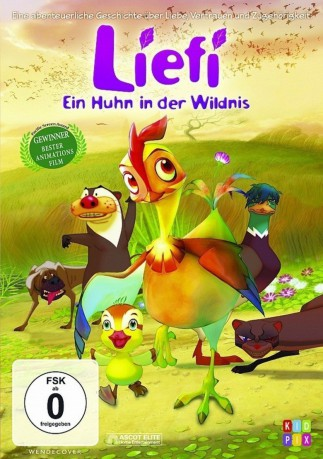

#2030 Liefi - Ein Huhn in der Wildnis
 
 IMDB-Wertung: 7.1 / 10
IMDB-Wertung: 7.1 / 10  Metascore: 0
Metascore: 0 
Die Henne Liefi lebt in einer Legebatterie und will nichts wie weg, einmal die Sonne sehen und auf richtigem Boden stehen. Durch eine List - sie stellt sich tot - gelingt es ihr. Doch kaum rappelt sie sich in einem Waldstück hoch, wo sie mitsamt den toten Artgenossen entsorgt wurde, wird sie von einem Wiesel angegriffen. Sie bekommt unerwartet Hilfe. Ihr Traum, ein Ei auszubrüten, geht in Erfüllung, ist es auch nur die Brut einer vom Wiesel geschnappten Wildente. Sie zieht den Jungen auf wie ihr eigenes Küken.
Jahr: 2011
Dauer: 93 Minuten
FSK:
Land: Süd-Korea Studio: Ascot Elite Home EntertainmentTonspuren:
Untertitel:
Auflösung: 1080p (1920x1040) Größe: 2887 MB
Genre: Animation/Trick, Abenteuer, Drama, Familie
Regisseur: Seong-yun Oh
Drehbuch: Seonmi Hwang, Eunjeong Kim, Hyeon Na
Soundtrack: Patrick Cannell, Ji-soo Lee
Darsteller:
- So-ri Moon als Leafie - Ipssak
 Min-sik Choi als Wanderer - Nagnae
Min-sik Choi als Wanderer - Nagnae Cheol-min Park als Mayor - Dalsu
Cheol-min Park als Mayor - Dalsu- Stacey DePass als Daisy / One Eye
- Bryn McAuley als Chirpie / Willie, Baby / Willie, Child
- Ryan Hollyman als Wilson / Bat / Flock Leader / Announcer
- Ron Basch als Barnyard Dog / Wood Duck Dad / Blue Bird / Bully
- Angela Besharah als Rae / Wood Duck Girls / Duck Girl
 Drew Nelson als Mi / Blade
Drew Nelson als Mi / Blade- Juan Chioran als Rooster
- Christian Potenza als Mayor
- Kyle Labine als Wood Duck Boys
- Seung-ho Yoo als Greenie - Chorok
- Sang-hyun Kim als One-Eye
- Sook-Kyeong Jeon als Jjaek
- Sang Hyun Uhm als Rooster
- Seong-ung Sa als Red Head / Barnyard duck
- Shin-Jeong Han als Young Greenie / Barnyard duck
- Ji-hye Kim als Mandarin / Garden hen
- Beom-gi Hong als Bat / Gganjugi
- Seung-won Seo als Owl / General duck
- Min-joo Kim als Additional ducks and chickens
- Seon-Kyeong Kim als Additional ducks and chickens
- Ah-rim Kim als Additional ducks and chickens
- Go-un Park als Additional ducks and chickens
- Yong Yoo als Additional ducks and chickens
- Ja-Myeong Lee als Additional ducks and chickens
- Ji-hee Lee als Additional ducks and chickens
- Mi-Dong Heo als Additional ducks and chickens
- Seung-cheol Hong als Additional ducks and chickens
- Yoon-jeong Hong als Additional ducks and chickens
- Walker Boone als Farmer
- Shoshana Sperling als Barn Hen / Do / Ibis Twins / Stork / Duck in Crowd
- Catherine Disher als Mother Hen / Toe / Wood Duck Mom
- Toby Proctor als Willie, Teen
- L. Dean Ifill als Owl / Ace
Datei: X:\Kinder Filme (G-M)\Liefi - Ein Huhn in der Wildnis (2011, FSK, 1920x1040).mkv seit 25.09.2015
Festplatte: Kinder-Filme+Trick
 Es gibt insgesamt 84 Filme in der Gruppe 'Kinder Filme (G-M)'
Es gibt insgesamt 84 Filme in der Gruppe 'Kinder Filme (G-M)'